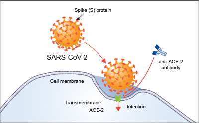

The virus is thought to spread mainly from person-to-person.
Between people who are in close contact with one another (within about 6 feet).This can also spread through indirect contact(when an affected person sneezes and touches a thing and a known or unknown person touches that, the virus gets transmitted to them). Respiratory droplets are produced when an infected person coughs or sneezes and
these droplets can land in the mouths or noses of people who are nearby or possibly be inhaled into the lungs.The lungs are the organs most affected by COVID-19 because the virus accesses host cells via the enzyme ACE2, which is most abundant in the type II alveolar cells of the lungs. The virus uses a special surface glycoprotein called a "spike" (peplomer) to connect to ACE2 and enter the host cell. The density of ACE2 in each tissue correlates with the severity of the disease in that tissue and some have suggested that decreasing ACE2 activity might be protective, though another view is that increasing ACE2 using Angiotensin II receptor blocker medications could be protective and that these hypotheses need to be tested. As the alveolar disease progresses, respiratory failure might develop and death may follow.It is primarily spread between people via respiratory droplets from coughs and sneezes.
The virus also affects gastrointestinal organs as ACE2 is abundantly expressed in the glandular cells of gastric, duodenal and rectal epithelium as well as endothelial cells and enterocytes of the small intestine.The virus has also been found in faeces, and transmission through faeces is being researched. The virus has been found in the faeces of as many as 53% of hospitalised people and more anal swab positives have been found than oral swab positives in the later stages of infection.The virus was found in faeces from 1 to 12 days and 17% of patients continued to present the virus in faeces after no longer presenting them in respiratory samples, indicating that the viral gastrointestinal infection and the potential fecal-oral transmission can last even after viral clearance in the respiratory tract. Reoccurrence of the virus has also been detected through anal swabs suggesting a shift from more oral positive during the early stages of the disease to more anal positive during later periods.
The virus is thought to be natural and have an animal origin, through spillover infection. The origin is unknown but by December 2019 the spread of infection was almost entirely driven by human-to-human transmission. The earliest known infection occurred on 17 November 2019 in Wuhan, China.
